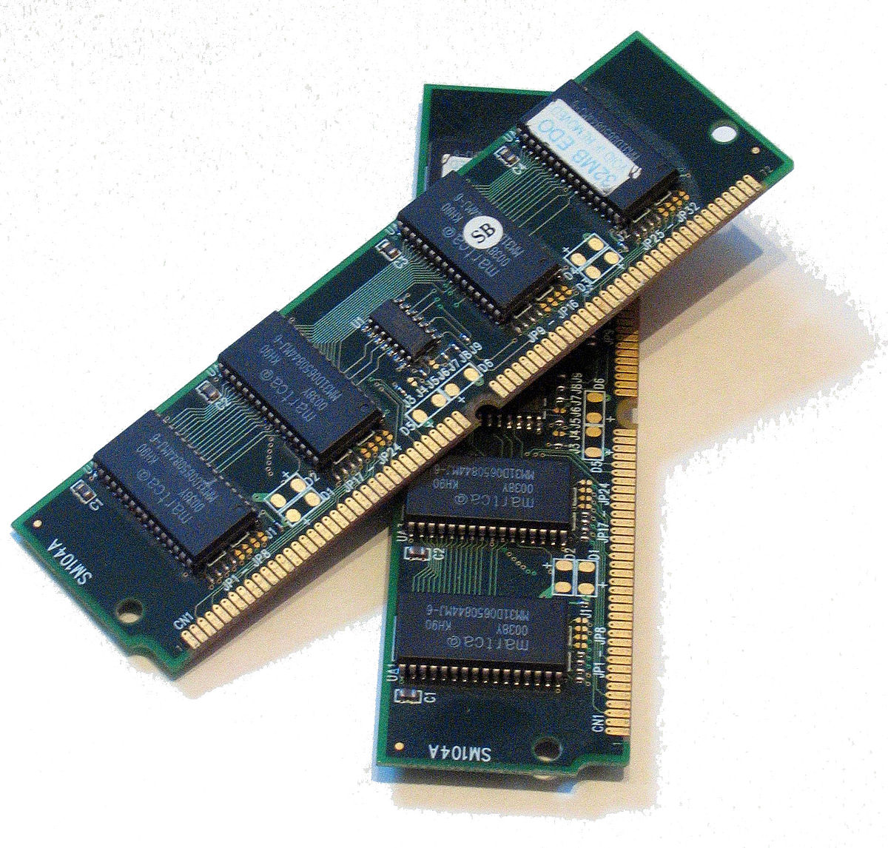

Memory.html

หน่วยความจำ (Memory Unit) ทำหน้าที่เก็บโปรแกรมหรือข้อมูลที่รับมาจากหน่วยรับข้อมูล เพื่อเตรียมส่งออกหน่วยประมวลผลกลางทำการประมวลผล และรับผลลัพธ์ที่ได้จากการประมวลผล และเตรียมส่งออกหน่วยแสดงผลข้อมูลต่อไป ซึ่งหน่วยความจำของคอมพิวเตอร์แบ่งออกเป็น 2 ประเภทหลักๆ